Rendering modes showed the many ways to render a beautiful location in a fractal; this page is specifically about the problem of finding such locations. A location is the camera half of a wallpaper: a fractal family with its constants fixed, a center point in the complex plane, and a frame width and height — where to point and how far to zoom. Color is deliberately absent: a location is judged on its geometry alone, and later stages cover choosing rendering styles and palettes to suit it (Training judges, Color palettes).
What makes a location good
Whether a location is geometrically beautiful is, in the end, an aesthetic call. A view that is too busy for one person is delightful to another; a lone filament crossing open space might be dull in a gallery but exactly right on a desktop, where sparse geometry leaves room for icons and text, while a dense tangle that prints beautifully can be exhausting behind an already busy desktop. A few famous neighborhoods — Seahorse Valley, Elephant Valley — are beautiful by broad consensus, but they are tiny slivers of the territory worth exploring. The views below span that spectrum, and whether each reads as too sparse, too busy, or just right is largely personal preference.
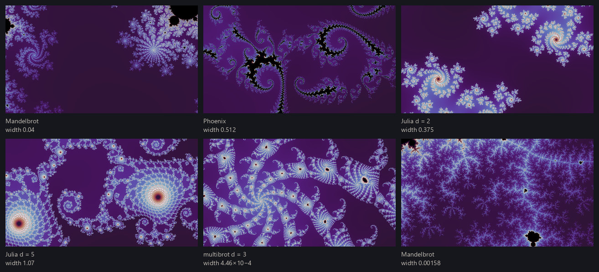
To give the pipeline some definition of good, we use human judgment, applied to a large set of locations. As the project runs, locations are rated by hand on a four-point scale, from junk to exceptional wallpaper material. Each judgment looks at several differently-colored renders of the same location, because the thing being rated is the geometry — the question is not "is this picture good as rendered" but "could this place make a good wallpaper across the many rendering modes and palettes available to it." Those ratings are the raw material for the location judge, a small neural network trained to predict them (see Training judges); here are a few examples from each category:
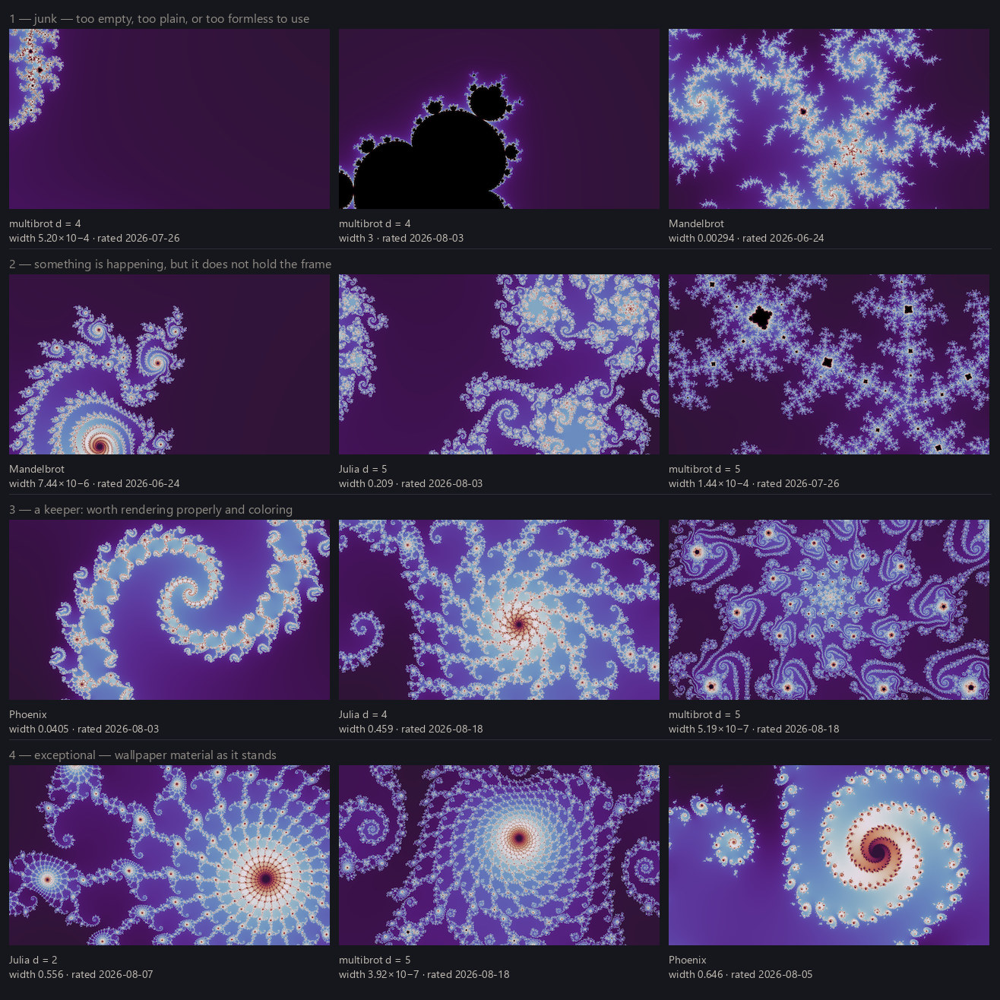
Guided search
Escape-time fractals established the narrow band where interesting detail lives: deep inside a set nothing escapes and the image is black; far outside everything escapes at once and the image is a bland gradient; all the great structure crowds the boundary. But the boundary is not itself the answer. Most boundary views are either nearly empty — one filament crossing a void — or pure visual noise, chaos at every scale with nothing for the eye to hold. Genuinely good views are rare, and they cluster: a spiral worth framing tends to sit in a neighborhood of other spirals worth framing — Seahorse Valley is a classic example.
Random sampling shows the rarity directly. Below are viewports drawn at random along the boundary, kept only if they pass a crude complexity check — not mostly interior, not already escaped to blandness, something actually happening in the frame. Even with that filter, almost all of them are mediocre at best as wallpapers, in my opinion — and that pattern held across more than a hundred such draws.
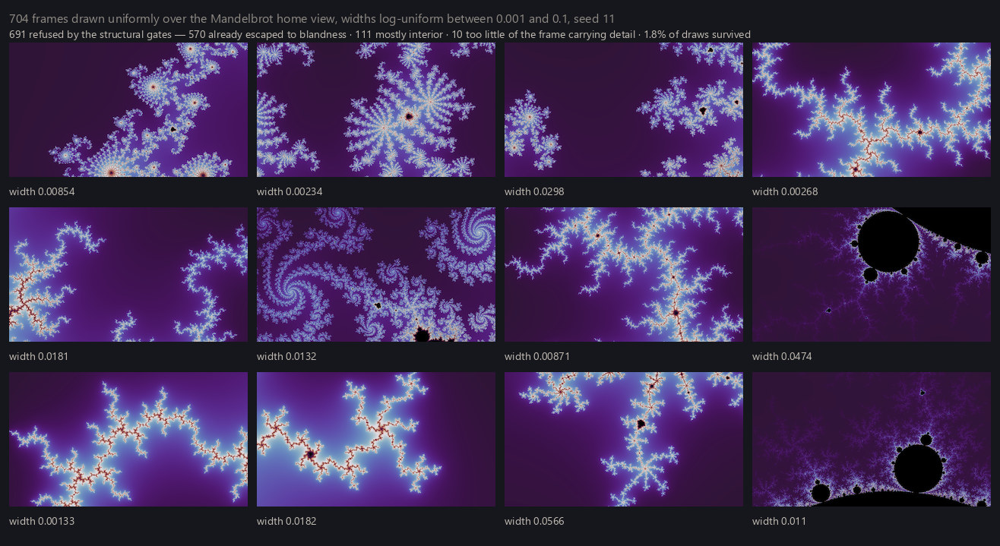
Rarity plus clustering is the signature of a search problem, and a search needs three things: places with some reason to be promising to start from, a way to move locally, and, crucially, a valuation function that tells better from worse. The project's valuation function is the location judge above, and its search is a guided walk: thousands of frames explored per run, descending toward structure and away from both emptiness and chaos.
Minibrots
Before the walk itself, meet the landmark it navigates by. Escape-time sets have a wonderful property: a set can contain miniature copies of itself. For the Mandelbrot set we call these copies minibrots, and they are everywhere, at every scale; its multibrot cousins carry miniature copies of their own. Two facts make them special to a search. First, each copy has an exact center — its nucleus — a point whose orbit repeats in a perfect cycle, which makes the nucleus the root of an equation that Newton's method can solve to full precision: a minibrot is not just a shape but an addressable coordinate at a known scale. Second, the richest filament structure in the plane grows in the halo around a copy — minibrots mark treasure.
The walk
Each fractal family gets its own walk, and a walk is not one path but a growing forest of frames. Its roots are starting frames drawn from per-family pools: for the Julia families, constants c accumulated from earlier discoveries (the atlas idea from Escape-time fractals — the Mandelbrot set as a map of all Julia sets — made literal); for the phoenix family, a pool of seed constants placed where the family's scarce plume structure is known to grow; for the parameter planes — the Mandelbrot set and its multibrot cousins — a grid of a few hundred minibrot nuclei per plane, plus each plane's home view. None of these pools is frozen: ratings and finds flow back into them as new roots while the project runs, and Seeds from labels below is about exactly that.
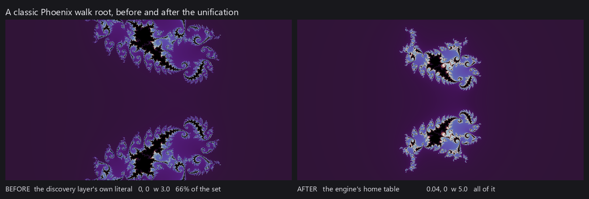
From those roots the walk grows trees. It repeatedly takes the most promising frame it knows about — the frontier is a priority queue of frames — and expands it. (Every frame shares the project's fixed aspect ratio, which is why a center and a width fully specify one.) One expansion runs in five beats.
Render cheaply. The frame is drawn small and fast, one sample per pixel — a thumbnail of its smooth field, not a finished render.
Propose children. Four candidate child frames are drawn inside the parent, each zoomed to between 35% and 50% of its width. Most are pointed at foci: blur the smooth field at several radii and keep the peaks that survive every blur. A peak that persists across scales is a real concentration of structure, not one bright pixel, and the survivors are kept spaced apart so the four candidates don't pile onto a single feature. The remainder are placed at random or toward raw detail density, as insurance against the focus-finder's blind spots.
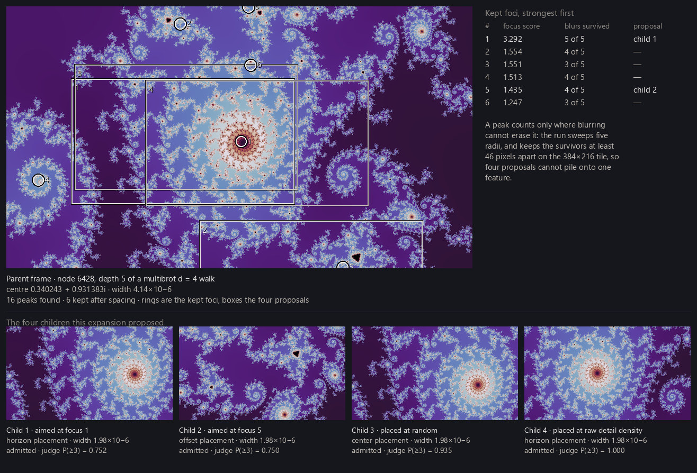
Gate. Each candidate is rendered the same cheap way, and structural checks throw out the hopeless before the judge ever sees one: too much interior (a mostly-black frame), instant escape (the whole frame gone in a few steps — the bland far-exterior signature), a flat field with no usable range, and frames where too few tiles carry any edge detail. In one measured run, 14% of all candidates died at these gates and were never scored at all.
Score. The judge scores the very render the gates just examined — nothing larger is drawn, and that render is always in the same neutral palette, so the judge compares geometry and never coloring. The location judge returns the probability that the view would be rated at least a 3 on the four-point scale above. At 0.385 or higher the frame is admitted: recorded as a find and placed on the frontier. Between 0.1 and 0.385 it is expandable — a stepping stone the walk may explore through, but never a find. Below that it is refused. One allowance keeps the parameter planes viable: a plane descent starts wide and bland before it gets good, so its first few steps get a waiver of the expandable bar rather than dying at the top.
Prioritize. Frontier order is the judge's score, plus a dash of random jitter so the walk doesn't fixate, plus a slight bonus for depth. Expansion runs in batches of eight; a quarter of each batch is reserved for roots that have never been touched, and every root is capped at twelve expansions. Without the reservation and the cap, the handful of richest roots would starve everything else — a lesson the project learned by watching it happen.
The judge steers, but it never drives: it cannot move a frame or propose one, only reorder the queue and decide each candidate's fate. Where the camera can go is decided entirely by the geometric proposal rules above. What admission is for comes later in the pipeline: admitted locations are the standing stock that rendering and selection draw from (From locations to wallpapers).
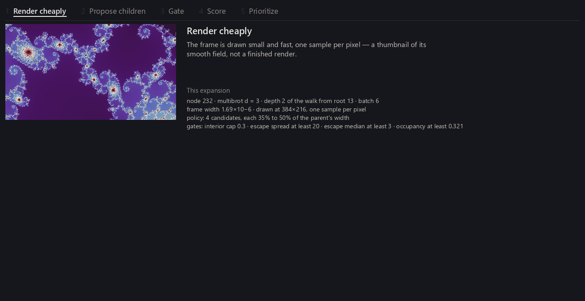
Reframing a find
Minibrots looked like the shortcut to skip the search entirely. First-principles methods exist for enumerating them directly, and my hope was that a list of minibrots would be a list of great seed locations. It failed: locations found that way were almost universally bad. The plane holds unimaginably many minibrots, and nearly all of them turn out to sit in dull neighborhoods. What worked instead was the opposite direction: find minibrots near views the walk already likes, and use them to recompose the camera. A reframing inherits the quality of whatever triggered it, which is exactly why nearby-minibrots works and cold enumeration does not.
That idea is packaged as three reframing operators, each triggered when a frame the walk has chosen to keep exploring — admitted or expandable — shows signs of a minibrot. Each is easiest to see in the figure below.
snap_to_nucleus recenters exactly: solve for the nucleus with Newton's
method and put it at the center of the frame. It only fires when a nucleus actually lies
inside the current frame — most attempts are refused for that reason. A snap is a
correction, not a teleport.
lateral_to_sibling steps sideways: probe a ring around the current minibrot
for a neighboring one at comparable scale, and frame that one instead.
expand_neighborhood widens the net: sweep the surrounding disc for
minibrots at the current scale or below, and propose the best two.
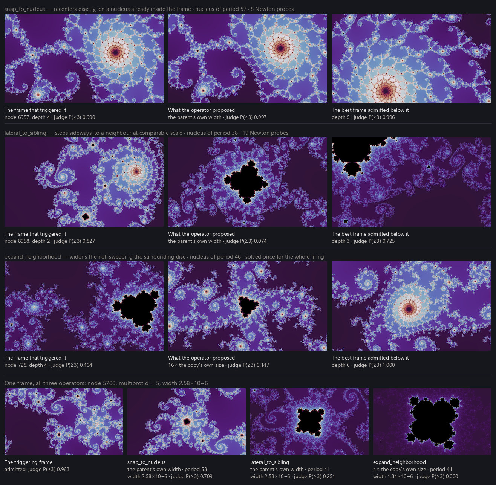
Every frame an operator proposes is then sized by the framing ladder: keep the parent's own width, or take 4× or 16× the minibrot's own size — never smaller, because a minibrot framed at its own size is mostly a black blob that never escapes. The ladder aims outward on purpose: the payoff of a minibrot is its halo, not the copy itself. The figure below shows the same nucleus at all three framings.
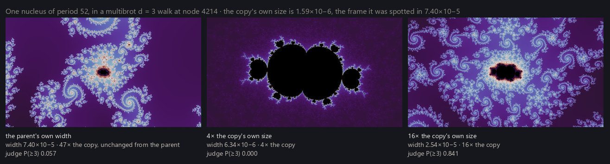
Seeds from labels
Fractals contain essentially unlimited structure, but quality clusters tightly. So the supply strategy runs both directions at once: most of the effort explores variations and deviations around known-good seeds, while a steady share of fresh roots keeps hunting for quality nowhere yet on the map. The seeds are ratings already on the books — a run reads whatever map exists when it starts, and never waits on new labeling.
The atlas idea pays a second dividend because of the Mandelbrot–Julia connection. When the walk admits a parameter-plane location, its center c is by definition a Julia constant — and by the neighborhood principle from Escape-time fractals, a Julia set inherits the character of where its c sits. So admitted plane finds are recycled directly as Julia roots: the twin channel.
Recycling needs one restraint. Two nearby c values give two nearly identical Julia sets, so a new twin is skipped if its c lies within a certain radius (0.032 units) of one already accepted. That radius is a cost dial, not a boundary in the mathematics: similarity between neighboring Julia sets fades smoothly with distance, with no knee anywhere, so the floor simply sets how much near-duplication a run is willing to pay for.
One seeded chain, end to end, shows the whole page in miniature — the figure below walks
it frame by frame. A root is placed beside a location I had rated highly. Two zoom steps
descend into its filaments. Then expand_neighborhood spots a minibrot far
below the current scale, and the ladder's widest framing recomposes the camera around it.
Two more zoom steps refine the crop, and the final frame is admitted with a near-perfect
score from the judge.
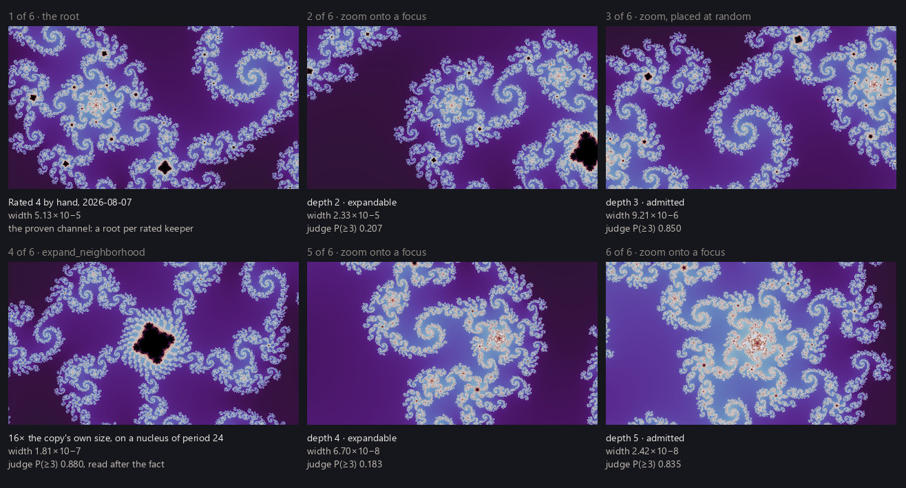
Where the walk stops
A walk has three stopping conditions. First, a frame that gets too narrow stops: the walk enforces a width floor of 10⁻⁹, set comfortably above the point where adjacent pixels collide in double-precision arithmetic and there is nothing left to render. Letting walks push closer to that wall would be easy engineering; for now the floor is simply a chosen stopping rule. Rendering past the wall takes genuinely different machinery, and that story has its own page — Deep zoom. Second, a root that has been expanded twelve times retires, so no root monopolizes a run. And finally, the run itself has a time budget; when it ends, the frontier simply stops being served.
Examining walk quality
Walks are far from interchangeable: the reservation and the cap in the Prioritize beat exist precisely because a few rich roots would otherwise consume a whole run while others sit untouched.

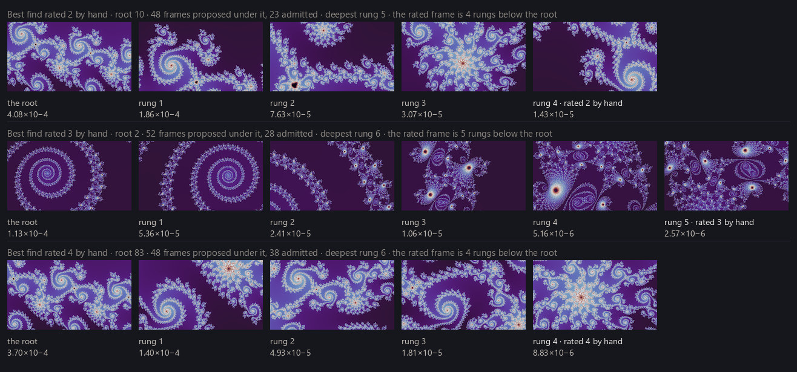
The location judge has been doing quiet work all through this page — scoring candidates, setting fates, ordering the frontier. The next page (Training judges) is about where it comes from: the ratings, the training, and what a small network can and cannot be trusted to know.
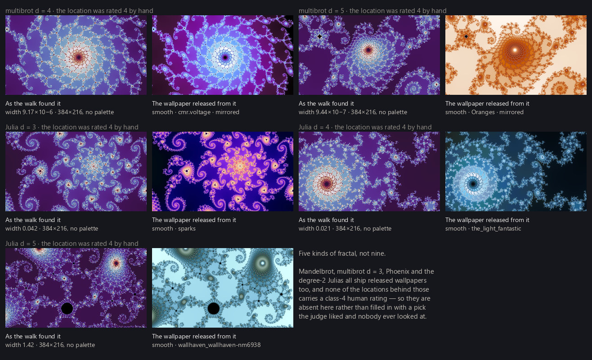